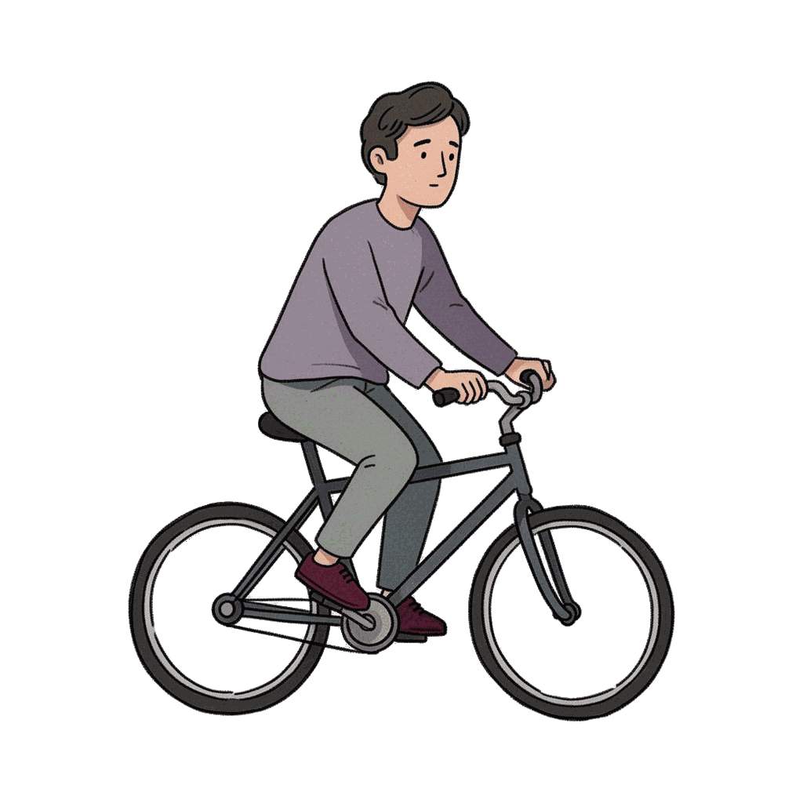
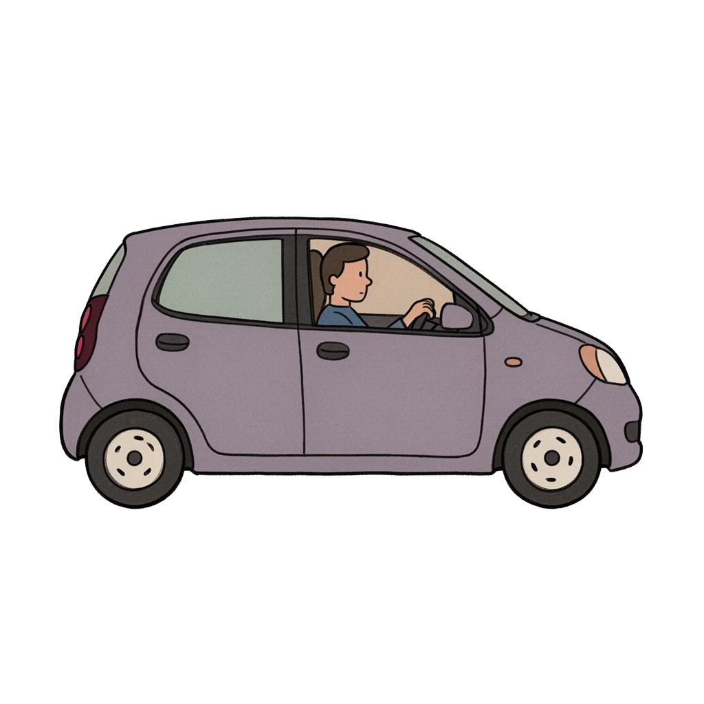
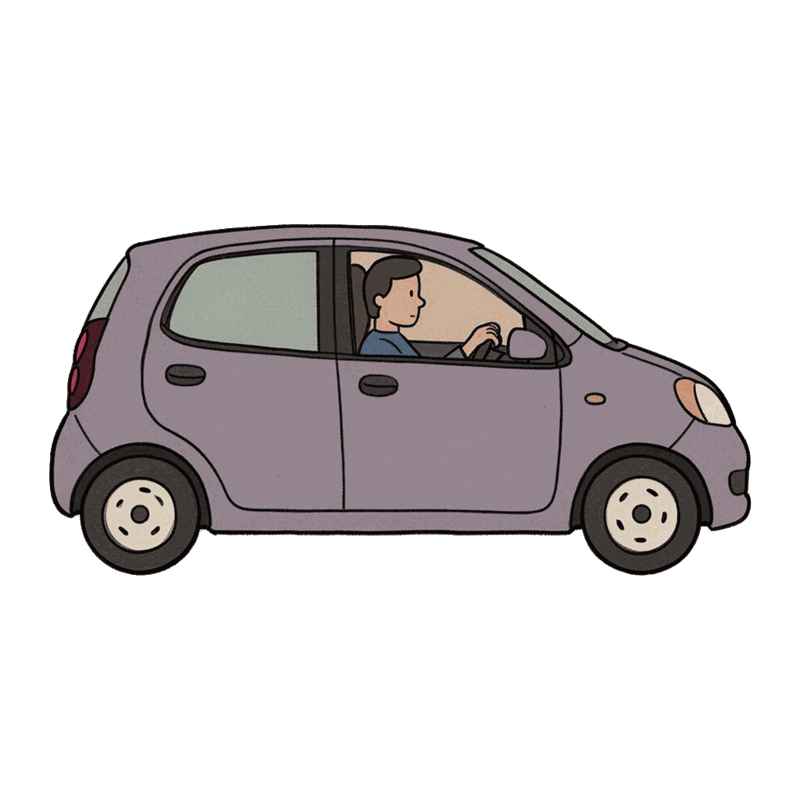

Motor Vehicle Collisions in NYC · Data Story · NYC 2012–2026
Revealing the complexity of motor vehicle collisions in New York City
— who gets hurt, where it happens, why it happens, and what the patterns may suggest
Choose your perspective to begin:






Scroll to start the story
Behind every number is a person. Let's look at what the data reveals about who is most at risk — and why.